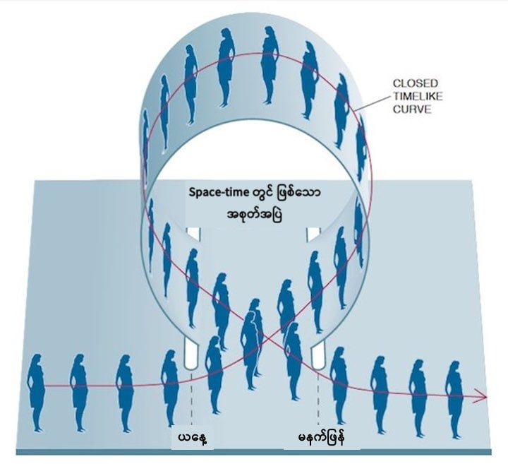

ဒါဆို ဒီနေရာမှာ မေးစရာ တစ်ခု ရှိလာပါတယ်။ အတိတ်ကို အချိန်ခရီး သွားနိုင်ခဲ့မယ် ဆိုရင် အတိတ်ကို ပြန်ပြောင်းပစ်ဖို့ ဖြစ်နိုင်မလား ဆိုတဲ့ မေးခွန်းပဲ ဖြစ်ပါတယ်။
ဒီ မေးခွန်းက အတော်တော့ အဖြေရ ကျပ်တဲ့ မေးခွန်းတစ်ခုပဲ ဖြစ်ပါတယ်။ ဘာကြောင့်ဆို အတိတ်ကို ပြန်သွားပြီး အပြောင်းအလဲ တွေ လုပ်နိုင် ခဲ့မယ် ဆိုရင် ဖြေရှင်းလို့ မရနိုင်တဲ့ ပြဿနာတွေ ကြုံတွေ့လာ နိုင်လို့ပဲ ဖြစ်ပါတယ်။ တနည်းအားဖြင့် မူလ အချိန် timeline နဲ့ ပြုပြင်လိုက်တဲ့ အချိန် timeline မတူရင် ဘာတွေ ဖြစ်လာမလဲ ဆိုတဲ့ ပြဿနာကို ဘယ်သူမှ ဖြေရှင်းချက် မပေးနိုင်ပါဘူး။
ဒါပေမယ့် ဩစတြေးလျ နိုင်ငံ ကွင်းစလန် တက္ကသိုလ် (University of Queensland) က ရူပဗေဒ ပညာရှင်တွေရဲ့ တွက်ချက်မှု အရ အချိန်ခရီးသွား တွေဟာ သွားနိုင်ခဲ့မယ် ဆိုရင်တောင် အတိတ်သမိုင်းကို ပြောင်းလဲနိုင်စွမ်း ရှိမှာ မဟုတ်ဘူး လို့ ဆိုပါတယ်။
သူတို့ဟာ သူတို့ရဲ့ တွေ့ရှိချက်တွေကို Classical and Quantum Gravity သုတေသန ဂျာနယ်မှာ စာတမ်း ရေးသား တင်ပြထားတာ ဖြစ်ပါတယ်။
ဒီစာတမ်းရဲ့ အဆိုအရ အတိတ်ကို ပြန်သွားပြီး ပြုပြင်ဖို့ ကြိုးစားခဲ့မယ် ဆိုရင် အနာဂါတ်နဲ့ ဝိယောဓိ ဖြစ်လာမယ့် အဖြစ်အပျက် မှန်သမျှ ဖြစ်မလာအောင် ရူပဗေဒ သဘောတရားတွေက အလိုလို ရှောင်ရှား ပေးသွားမယ် လို့ ဆိုပါတယ်။
အကယ်လို့ သင်ဟာ အတိတ်ကို ပြန်သွားပြီး အဖြစ်အပျက် တစ်ခုကို ပြောင်းလဲဖို့ ကြိုးစားခဲ့လျှင် အဲ့သည် အဖြစ်အပျက်ရဲ့ နောက်ဆက်တွဲ ဖြစ်စဉ် တွေက သမိုင်းကြောင်းကို မူလနေရာ ရောက်အောင် ပြန်ပြီး တည့်မတ် ပေးကြမယ်လို့ ဆိုပါတယ်။
ရိုးရိုးရှင်းရှင်း ပြောရရင်တော့ အတိတ်ကို ပြန်သွားလို့ ရခဲ့လျှင်တောင် သမိုင်းကို ပြောင်းလဲနိုင်ဖို့ မဖြစ်နိုင်ပါဘူး တဲ့။
မြေး–အဖိုးဝိယောဓိ (Grandfather paradox)
အချိန်ခရီးသွား ခြင်းနဲ့ ပါတ်သက်တဲ့ ဝိယောဓိ (ရှေ့နောက် မညီညွတ်ခြင်း) တွေထဲမှာ အလွန် နာမည်ကြီးပြီး အဖြေမရှိတဲ့ ဝိယောဓိ တစ်ခု ဖြစ်ပါတယ်။မောင်ဖြူဟာ အချိန်ခရီးသွား စက်ကို တီထွင်လိုက်ပါတယ်။ ပြီးတော့ အချိန်ခရီးသွား စက်နဲ့ နောက်ပြန် ပြန်ပြီး အတိတ်ကို ပြန်သွားခဲ့ပါတယ်။ သူ့အဖိုး ငယ်ငယ်က အဖွားနဲ့ မတွေ့မီ အချိန်ကပေါ့။ ပြီးတော့ အတိတ်က သူ့အဖိုး ဖြစ်သူကို ပြန်ပြီး ဒိုင်းညှောင့် လုပ်လိုက်ပါတယ်။ အဖိုး သေသွားရော။ အဖိုးသေတော့ အဖွားနဲ့ မတွေ့လိုက် ရဘူး။ ဒီမှာ မောင့်ဖြူ့ အဖေကို မွေးမလာ တော့ဘူး။ မောင်ဖြူ့ အဖေ မမွေးတော့ မောင်ဖြူလဲ မမွေးလာ တော့ဘူးပေါ့။
မောင်ဖြူး မမွေးတဲ့ အတွက် မောင်ဖြူလဲ အချိန် ခရီးသွား စက်ကို မထွင်နိုင် တော့ဘူး။ ပြီးတော့ အချိန်ခရီးသွားမယ့် မောင်ဖြူလဲ မရှိတော့ဘူး။ မောင်ဖြူမရှိတော့ အတိတ်ကို ပြန်ပြီး အဖိုးကို ပြန် ဒိုင်းညှောင့်မယ့် မောင်ဖြူးလဲ မရှိတော့ဘူး။ အဖိုး မသေဘူး။ ဒါဆို အဖွားနဲ့ တွေ့မယ်။ မောင်ဖြူ့ အဖေ မွေးမယ်။ မောင့်ဖြူ့အဖေက မောင်ဖြူ့ကို ဆက်မွေး။ မောင်ဖြူကြီးလာတော့ အချိန် ခရီး သွားစက် ထွင်၊ အတိတ်ကို ပြန်သွား၊ အဖိုးကို ဒိုင်းညှောင့် ပြန်လုပ်။ ဒါနဲ့ တပတ်ပြန် လည်သွားရော။
အခု ဝိယောဓိရဲ့ ပြဿနာကို မြင်ကြတယ် မဟုတ်လား။ (မရှင်းသေးရင် နောက်တခေါက် ပြန်ဖတ်ကြည့်ပါ ခင်ဗျာ)။
အချိန်ခရီးသွားခြင်း
အိုင်းစတိုင်း ပြောတဲ့ အချိန် ခရီးသွားခြင်း ဆိုတာက အခု လူတွေ အများပြော နေတဲ့ အချိန်မျဉ်းကို ပြောင်းပြန် ပြန်သွားတာနဲ့ မတူပါဘူး။ အိုင်းစတိုင်းရဲ့ တွက်ချက်မှုအရ အချိန်ခရိး သွားတယ် ဆိုတာက အချိန်မျဉ်းဟာ ကွေးသွားပြီး မူလနေရာကို ပြန်ရောက်လာမယ်လို့ ဆိုလိုတာ ဖြစ်ပါတယ်။ တနည်းအားဖြင့် ဒါက အချိန်ကို ကွင်းပိတ်ကြီး တစ်ခုလို မြင်တဲ့ အယူအဆ (closed time-like curve) ဖြစ်ပါတယ်။
ဒီ သုတေသီ တွေက ဘိလိယက် ခုံပေါ်မှာ ဘိလိယက် ဘောလုံးတွေ တိုက်မိတဲ့ အဖြစ်ကို “ဖြစ်စဉ်” (events) တွေ အနေနဲ့ ကိုယ်စား ပြုဖို့ ရွေးချယ် ခဲ့ ကြပါတယ်။ စက်ဝိုင်းပုံ ပြုလုပ်ထားတဲ့ ဘိလိယက် ခုံကြီးကိုတော့ ပိတ်နေတဲ့ အချိန်စက်ဝန်း (closed time-like curve) အနေနဲ့ ကိုယ်စားပြုခဲ့ ပါတယ်။
ကျွန်တော်တို့လဲ ဒီ စမ်းသပ်မှုကို စဉ်းစားကြည့် ကြရအောင်ပါ။ ဒီ စက်ဝိုင်းပုံ ဘိလိယက် စားပွဲခုံ ပေါ်မှာ ဘိလိယက် ဘော်လုံးတွေ တင်ထားတယ် ပေါ့ဗျာ။ ဒီ အထဲက တစ်လုံးကို တောက် လိုက်ရင် ဒီ ဘောလုံးဟာ ရွှေ့သွားပြီး အခြား ဘော်လုံးတွေကို တိုက်မိမယ်။ ဒါမှမဟုတ် ဘေးဘောင်ကို တိုက်မိပြီး ပြန်ကန် ထွက်လာမယ်။ အဲ့တော့ သူ့အရှိန် မကုန် မချင်း အခြား ဘော်လုံးတွေကို တိုက်ပြီး ဆင့်ကဲ ရွှေ့သွားတာမျိုး ဆက်ဖြစ်လာမှာ ဖြစ်ပါတယ်။
ဒီအဆင့်မှာ သုတေသီ တွေက ဒီ ဘော်လုံးရဲ့ သွားရာ လမ်းကို ကွန်ပြူတာနဲ့ ပုံဖေါ် (simulate) ကြည့်ခဲ့ ကြပါတယ်။ ဒီ သွားတဲ့ လမ်းကြောင်းကို မှတ်ထားပြီး နောက်တခါ ပြန် simulate လုပ် ပုံဖေါ်တဲ့ အခါ ကျတော့ ဒီ သွားရာ လမ်းကို ကြားမှာ တနည်းနည်းနဲ့ ပြောင်းပေး လိုက်ပါတယ်။
ဒါပေမယ့် အံ့ဩစရာ ကောင်းတာက ဒီလို သွားရာ လမ်းကို ပြောင်းပေး လိုက် တာတောင်မှ ဒီဘောလုံးက တိုက်မိတဲ့ အခြား ဘောလုံး တွေရဲ့ ရွှေ့လျှားမှုက မူလ ဘော်လုံးကို မူလ လမ်းကြောင်းပေါ် ပြန်ရောက်အောင် လုပ်ပေးတယ် ဆိုတာပဲ ဖြစ်ပါတယ်။
တနည်းပြောရရင် ဘိလိယက် ဘောလုံးတွေ တောင်မှ ဘိလိယက်ခုံ အဝိုင်းပေါ်မှာ ရွှေ့သွားပြီးရင် ကြားက နှောက်ယှက်မှုတွေ ကြုံရသည့်တိုင် ဆက်ဖြစ်လာတဲ့ အဖြစ်အပျက်တွေက ဒီ ဘိလိယက် ဘောလုံးကို မူလ လမ်းကြောင်းပေါ်ကိုပဲ ပြန်ရောက်အောင် ပြုလုပ်ပေးတယ် ဆိုတာပဲ ဖြစ်ပါတယ်။
ဒီသုတေသနရဲ့ဆိုလိုရင်းကဘာလဲ
ဒီ သုတေသန က ဘာကို ပြနေလဲ ဆိုတော့ “အတိတ်ကို ပြန်သွားလို့ ရကောင်း ရနိုင်ပါ လိမ့်မယ်။ ဒါပေမယ့် သမိုင်းကိုတော့ ပြောင်းသွားအောင် လုပ်နိုင်မှာ မဟုတ်ပါဘူး” ဆိုတာပဲ ဖြစ်ပါတယ်။ဒီ တွေ့ရှိချက်ကို အသုံးချပြီး မြေး-အဖိုး ဝိယောဓိကို ဖြေရှင်းဖို့ ကြိုးစားကြည့် ကြရအောင်ပါ။
ဒီ တွေ့ရှိချက် အရဆို မောင်ဖြူဟာ အတိတ်ကို ပြန်ပြီး အဖိုး လုပ်တဲ့သူကို ဒိုင်းညှောင့်ဖို့ ကြိုးစားမယ် ဆိုရင် ကြားမှာ အဖြစ်အပျက် အသစ်တွေ ပေါ်ပေါက်လာပြီး မောင်ဖြူး အဖိုးလုပ်သူကို ဒိုင်းညှောင် မလုပ်ဖြစ်အောင် ဝင်ရောက် ကာဆီး ကြပါလိမ့်မယ်။
ဒါမှ မဟုတ်လဲ အဖိုးဖြစ်သူ ဒိုင်းညှောင့်ခံရပြီး သေဆုံး သွားချိန်မှာ အဖွားဟာ မောင်ဖြူ့ အဖေကို ကိုယ်ဝန် ဆောင်ထားတာလဲ ဖြစ်ချင် ဖြစ်သွားနိုင်ပါတယ်။
ဒီ သုတေသန က စကြာဝဠာကြီး တစ်ခုလုံးနဲ့ ဆိုင်တဲ့ အချိန်ခရီးသွားခြင်း သီအိုရီရဲ့ အကြောင်း-အကျိုး ဖြစ်စဉ် တွေကို ရိုးရိုးရှင်းရှင်း နှိုင်းယှဉ် ထားတာမို့ ပြီးပြည့်စုံတယ်လို့ မဆိုလိုပါဘူး ဆိုတာကို တော့ ဒီစာတမ်း တင်ပြတဲ့ သုတေသီ တွေက ဝန်ခံပါတယ်။
“ဒါပေမယ့် ဒါဟာ (နောက် သုတေသန တွေအတွက်) အစပဲလေ“ လို့ စာတမ်းတင်ပြသူတွေထဲက သုတေသီ တစ်ဦးဖြစ်သူ နိုမူရာ (Nomura) က ပြောပါတယ်။
— မောင်သူရ (မြန်မာ့သိပ္ပံ) —
Reference: Time travel is theoretically possible, new calculations show. But that doesn’t mean you could change the past